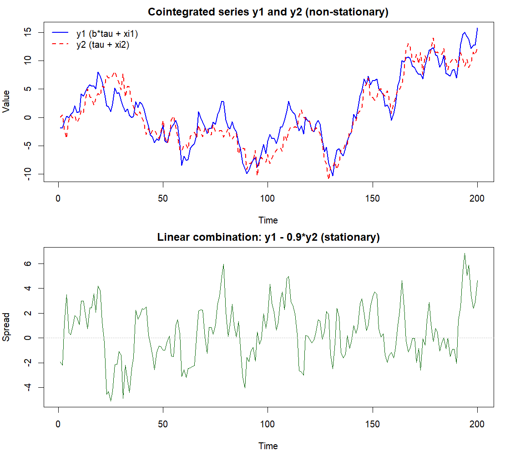
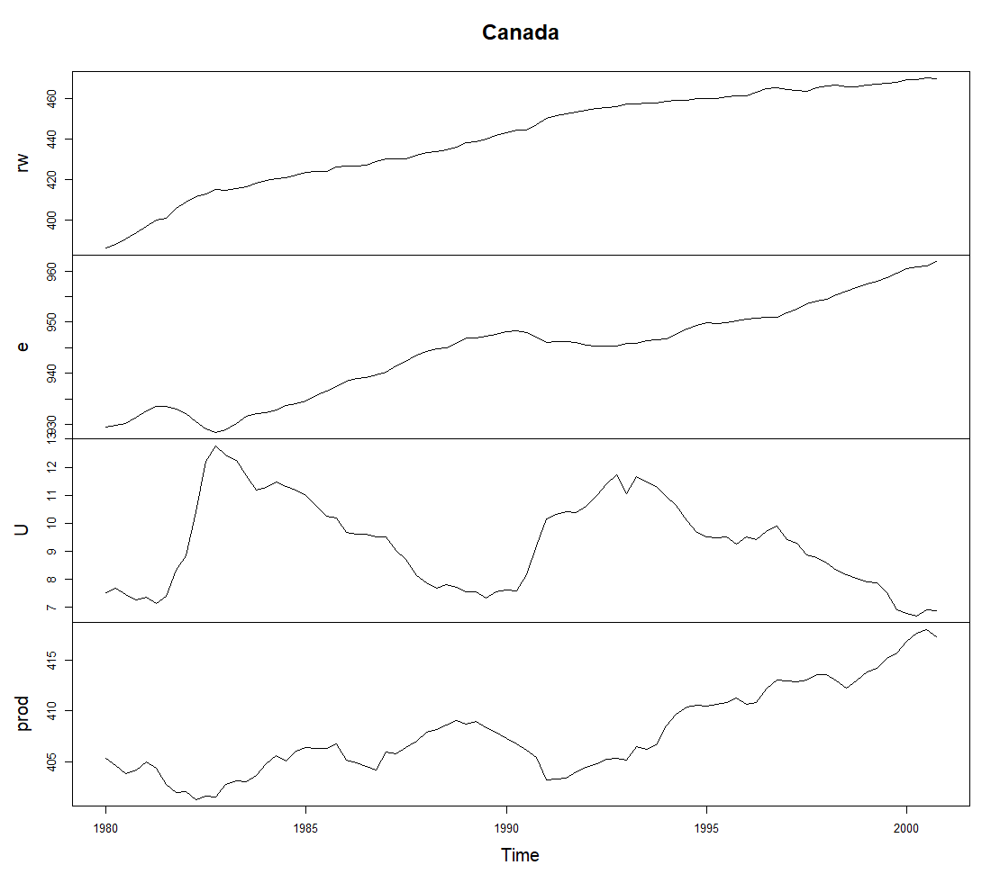

11 Cointegration
11.1 Introduction to cointegration
Instead of stationary variables, let us now assume that we have two variables, \(y_{1t}\) and \(y_{2t}\), where either or both are nonstationary—specifically integrated of order one, denoted as \(I(1)\).
Cointegration in the bivariate case. An important special case of linear regression between nonstationary \(I(1)\) variables arises when they share a common stochastic trend. Suppose there exists a linear relationship such that for some parameter \(\delta\), the linear combination \[\begin{equation*} z_t = y_{1t} - \delta y_{2t} = [1 \quad -\delta] \boldsymbol{y}_t \end{equation*}\] is stationary, \(I(0)\), even though \(y_{1t}\) and \(y_{2t}\) are individually nonstationary \(I(1)\). In such a case, \(y_{1t}\) and \(y_{2t}\) are said to be cointegrated.
The vector \([1 \quad -\delta]^{\prime}\) is called the cointegration vector.
Long-run equilibrium: Cointegration is often interpreted as a long-run relationship. If the equilibrium is defined by \(y_{1t} = \tilde{\delta} y_{2t}\), then \(z_t\) represents the “equilibrium error”—the extent to which \(y_t\) deviates from its equilibrium value.
Because \(z_t \sim I(0)\), this error fluctuates around zero with constant variance. On average, the system remains in equilibrium.
Why not just difference the data? An alternative way to analyze variables that are non-stationary (or integrated of order one) is to use their first differences, \(\Delta x_t\) and \(\Delta y_t\), which are stationary. However, if a cointegration relationship exists, differencing is not an optimal strategy because it discards the long-run level relationship (the “common trend”) between the series.
The problem of overdifferencing. To understand why simply differencing all \(I(1)\) variables can be problematic, consider a two-dimensional example where \(y_{1t} \sim I(1)\) and \(y_{2t} \sim I(0)\).
- The vector \(\boldsymbol{y}_{t}\) is effectively \(I(1)\), but differencing the entire vector is unnecessary for the second component.
Assume \((\Delta y_{1t}, y_{2t})\) follows a stable VAR(1) process: \[\begin{equation*} \begin{bmatrix} 1-a_{11}\mathsf{B} & 0 \\ 0 & 1-a_{22}\mathsf{B} \end{bmatrix} \begin{bmatrix} \Delta y_{1t} \\ y_{2t} \end{bmatrix} = \begin{bmatrix} \nu_1 \\ \nu_2 \end{bmatrix} + \begin{bmatrix} u_{1t} \\ u_{2t} \end{bmatrix}, \end{equation*}\] where \(\boldsymbol{u}_{t}\) is white noise. If we base our analysis on the fully differenced series \(\Delta \boldsymbol{y}_t\), the second equation becomes: \[\begin{equation*} (1-a_{22}\mathsf{B})\Delta y_{2t}=(1-\mathsf{B})u_{2t}. \end{equation*}\] Here, the error term has an MA(1) component \((1-\mathsf{B})u_{2t}\) with a unit root. This means the model for the differenced series becomes a VARMA(1,1) where the MA part is non-invertible. This misuse of differencing (“overdifferencing”) leads to misspecified models that are difficult to estimate.
General definition of cointegration. The situation described above can be formalized for \(\boldsymbol{y}_t = (y_{1t},\ldots, y_{Kt})\). If \(\boldsymbol{y}_{t} \sim I(1)\), but there is a linear combination \(\boldsymbol{\beta}^{\prime} \boldsymbol{y}_{t}\), which is \(I(0)\). then an \(I(1)\) process \(\{\boldsymbol{y}_{t},\ t=1,2,...\}\) \((K\times 1)\) is said to be cointegrated if there exists a nonzero parameter vector \(\boldsymbol{\beta}\) \((K \times 1)\) such that: \[\begin{equation*} \boldsymbol{\beta}^{\prime } \boldsymbol{y}_{t}\sim I(0). \end{equation*}\] The parameter \(\boldsymbol{\beta}\) is called the cointegrating (cointegration) vector (CI-vector).
- Note that this definition allows for trivial cases (like the overdifferencing example above) where \(\boldsymbol{\beta} =(0,...,1,...0)\), meaning one variable is already stationary.
- There can be several linearly independent CI-vectors. If there are \(r\) such vectors, they form the cointegrating matrix \(\boldsymbol{\beta} = [\boldsymbol{\beta}_{1}\ \cdots \ \boldsymbol{\beta}_{r}]\), and \(r\) is the cointegration rank.
Bivariate example and intuition. To illustrate, consider the process: \[\begin{equation*} \left[ \begin{array}{c} y_{1t} \\ y_{2t} \end{array} \right] = \left[ \begin{array}{c} \mu_1 \\ \mu_2 \end{array} \right] + \left[ \begin{array}{c} b \\ 1 \end{array} \right] \tau_t + \left[ \begin{array}{c} \xi_{1t} \\ \xi_{2t} \end{array} \right], \end{equation*}\] where \(\boldsymbol{\xi}_{t} =(\xi_{1t}, \xi_{2t})\) is stationary, such as \(\boldsymbol{\xi}_{t} =(\xi_{1t}, \xi_{2t}) \thicksim \mathsf{iid}(\boldsymbol{0}, \boldsymbol{\Sigma}_{\xi})\), \(\tau_{t} = \sum_{j=1}^t \eta_j\) is a random walk process (containing the stochastic trend, with a fixed initial value \(\tau_0\)) where \(\eta_t \thicksim \mathsf{iid}(0,\sigma^2)\).
Individually, \(y_{1t}\) and \(y_{2t}\) are \(I(1)\) because they both contain \(\tau_t\). Therefore, the time series they generate wandering behavior over time with increasing variance.
The non-stationarity of the processes \(y_{1t}\) and \(y_{2t}\) is driven by a one-dimensional random walk \(\tau_t\). However, the linear combination: \[\begin{equation*} y_{1t} - b y_{2t} = (\mu_{1}-b\mu_{2}) + (\xi_{1t}-b\xi_{2t}) \end{equation*}\] eliminates the random walk \(\tau_t\). The result is stationary (even iid), and it does not behave like \(y_{1t}\) and \(y_{2t}\). Instead, it is fluctuating around the constant mean \(\mu_{1}-b\mu_{2}\). Thus, the process is cointegrated with the cointegration vector \((1, -b)\).
This implies that the linear combination \(y_{1t} - b y_{2t}\) (where \(b \neq 0\)) establishes a very strong linear dependence between the processes \(y_{1t}\) and \(y_{2t}\), forcing them to move ‘’hand in hand’’. This is perhaps most evident when \(b = 1\) and \(\mu_1 = \mu_2\), in which case the linear combination \(y_{1t} - y_{2t}\) is stationary with an expected value of zero.
Although the processes \(y_{1t}\) and \(y_{2t}\) wander wildly over time, cointegration prevents them from drifting too far apart.
Empirical example and interpretation. Consider the aggregate income (\(Y_t\)) and consumption (\(C_t\)) of an economy. Empirically, both series are typically non-stationary. However, the Permanent Income Hypothesis suggests a long-run equilibrium relationship where a stable fraction of income is consumed, implying \(C_t = a Y_t, \, 0 < a < 1\). In logarithmic terms, this linearizes to: \[\begin{equation*} \log(C_t) - \log(Y_t) = \log(a) \end{equation*}\] This theoretical equilibrium provides the foundation for a cointegration model. While the individual series \(\log(C_t)\) and \(\log(Y_t)\) may wander indefinitely (stochastic trends), the linear combination \(u_t = \log(C_t) - \log(Y_t) - \log(a)\) is expected to be stationary. Here, the residual \(u_t\) represents the transient deviation from the long-run equilibrium. If consumption drifts too far from income, economic forces will eventually pull it back.
Non-uniqueness of CI-vectors. In the absence of restrictions, cointegrating (cointegration) vectors are not unique.
As an example, in the bivariate example above, if \((1, -b)\) is a CI-vector, then any multiple \((c, -cb)\) is also a CI-vector, as the linear combination remains stationary.
Why this matters? Because of this non-uniqueness, software (like R or EViews) usually reports ‘’normalized’’ cointegrating vectors. They typically set the first coefficient to 1 (just as we did with above for \(y_{1t}\)) to make the results interpretable.
While the vectors themselves are not unique, the cointegrating space (the subspace spanned by these vectors) is unique.
11.2 Cointegrated VAR and VECM model
Consider the \(K\)-dimensional VAR(\(p\)) process \[\begin{equation*} \boldsymbol{x}_{t} = \boldsymbol{A}_{1} \boldsymbol{x}_{t-1}+\cdots+ \boldsymbol{A}_{p} \boldsymbol{x}_{t-p} + \boldsymbol{u}_{t}, \quad t=1,2,... \end{equation*}\] where \(\boldsymbol{u}_{t}\sim\mathsf{iid}(\boldsymbol{0},\boldsymbol{\Sigma}_u)\).
First rewrite the model using the lag polynomial \(\boldsymbol{A}(\mathsf{B}) = \boldsymbol{I}_{K} - \boldsymbol{A}_{1}\mathsf{B}-\cdots-\boldsymbol{A}_{p}\mathsf{B}^{p}\). Using the algebraic result on lag polynomials (see Appendix A) similar to the univariate unit root case, we can decompose it as: \[\begin{equation*} \boldsymbol{A}\left(\mathsf{B}\right) = \boldsymbol{A} \left(1\right)\mathsf{B} + \left(\boldsymbol{I}_{K}-\sum_{j=1}^{p-1} \boldsymbol{\Lambda}_{j}\mathsf{B}^{j}\right)\Delta, \end{equation*}\] where \(\boldsymbol{\Lambda}_{j} = -\boldsymbol{A}_{j+1}-\cdots - \boldsymbol{A}_{p}\). Substituting this back allows us to write the VAR(\(p\)) as a Vector Error Correction Model (VECM) presentation: \[\begin{equation*} \Delta \boldsymbol{x}_{t} = \boldsymbol{\Theta} \boldsymbol{x}_{t-1} + \sum_{j=1}^{p-1} \boldsymbol{\Lambda}_{j} \Delta \boldsymbol{x}_{t-j} + \boldsymbol{u}_{t}, \quad t=1,2,... \end{equation*}\] where \(\boldsymbol{\Theta} =-\boldsymbol{A}(1)\).
The reduced rank condition. Now, assume that the standard stationarity condition (\(\det(\boldsymbol{A}(z))\neq 0\) for all \(\left\vert z\right\vert\leq 1\)) does not hold. Instead, assume the polynomial \(\det(\boldsymbol{A}(z))\) has roots at \(z=1\) (unit roots).
- Consequently, \(\det(\boldsymbol{A}(1))=0\), which implies that the matrix \(\boldsymbol{\Theta}\) is singular (reduced rank). Let the rank of \(\boldsymbol{\Theta}\) be \(r < K\), that is, \(\mathsf{rank}(\boldsymbol{\Theta})=r\).
Using a standard result from matrix algebra, any (\(K \times K\)) matrix of rank \(r\) can be decomposed into the product of two \(K \times r\) matrices of rank \(r\): \[\begin{equation*} \boldsymbol{\Theta} = \boldsymbol{\alpha} \boldsymbol{\beta}^{\prime}, \end{equation*}\] where \(\boldsymbol{\alpha}\) and \(\boldsymbol{\beta}\) are \((K\times r)\) matrices with \(\mathsf{rank}(\boldsymbol{\alpha})=\mathsf{rank}(\boldsymbol{\beta})=r\). Plugging this into the above model equation yields the VECM model: \[\begin{equation*} \Delta \boldsymbol{x}_{t} = \boldsymbol{\alpha} \boldsymbol{\beta}^{\prime} \boldsymbol{x}_{t-1} + \sum_{j=1}^{p-1} \boldsymbol{\Lambda}_{j} \Delta \boldsymbol{x}_{t-j} + \boldsymbol{u}_{t}, \quad t=1,2,... \end{equation*}\]
Interpretation: If we assume that \(\boldsymbol{x}_{t} \sim I(1)\), and \(\mathsf{E}(\boldsymbol{x}_{t})= \boldsymbol{0}\), then the term \(\Delta \boldsymbol{x}_{t}\) is stationary (\(I(0)\)). Since the error term \(\boldsymbol{u}_{t}\) is also \(I(0)\), for the equation to balance, the term \(\boldsymbol{\beta}^{\prime} \boldsymbol{x}_{t-1}\) must also be stationary (\(I(0)\)). This implies that the process \(\boldsymbol{x}_{t}\) is cointegrated.
Cointegrating vectors. The columns of the matrix \(\boldsymbol{\beta}\) are the cointegrating vectors. The linear combinations \(\boldsymbol{\beta}^{\prime} \boldsymbol{x}_{t-1}\) represent deviations from the long-run equilibrium relationships between the components of \(\boldsymbol{x}_{t}\).
These deviations are called “equilibrium errors”.
Since equilibrium errors are stationary, they fluctuate randomly around zero with constant variance. Once the system deviates from equilibrium, it tends to return to it.
Adjustment matrix. The parameter \(\boldsymbol{\alpha}\) is often called the adjustment matrix (or loading/weight matrix).
It describes how the errors \(\boldsymbol{\beta}^{\prime} \boldsymbol{x}_{t-1}\) feed back into the system to affect the changes \(\Delta \boldsymbol{x}_{t}\).
Essentially, \(\boldsymbol{\alpha}\) determines the speed and direction of the correction mechanism that forces the non-stationary variables back toward their equilibrium relationship.
Example case: A simple VECM presentation of the VAR(2) model. The bivariate cointegrated VAR(2) model with one cointegrating vector (\(r = 1\)) has the following VECM representation \[\begin{eqnarray*} \left[ \begin{array}{c} \Delta x_{1t} \\ \Delta x_{2t} \end{array} \right] &=& \left[ \begin{array}{c} \alpha_1 \\ \alpha_2 \end{array} \right] \left[ \begin{array}{cc} \beta_1 & \beta_2 \\ \end{array} \right] \left[ \begin{array}{c} x_{1, t-1} \\ x_{2, t-1} \end{array} \right] + \left[ \begin{array}{cc} \lambda_{11,1} & \lambda_{12,1} \\ \lambda_{21,1} & \lambda_{22,1} \end{array} \right] \left[ \begin{array}{c} \Delta x_{1, t-1} \\ \Delta x_{2, t-1} \end{array} \right] + \left[ \begin{array}{c} u_{1t} \\ u_{2t} \end{array} \right] \\ &=& \left[ \begin{array}{c} \alpha_1 (\beta_1 x_{1, t-1} + \beta_2 x_{2, t-1}) \\ \alpha_2 (\beta_1 x_{1, t-1} + \beta_2 x_{2, t-1}) \end{array} \right] + \left[ \begin{array}{cc} \lambda_{11,1} & \lambda_{12,1} \\ \lambda_{21,1} & \lambda_{22,1} \end{array} \right] \left[ \begin{array}{c} \Delta x_{1, t-1} \\ \Delta x_{2, t-1} \end{array} \right] + \left[ \begin{array}{c} u_{1t} \\ u_{2t} \end{array} \right]. \end{eqnarray*}\]
The Granger Representation Theorem. In the derivation above, we assumed \(\boldsymbol{x}_{t} \sim I(1)\). The connection between the unit root assumption in \(\boldsymbol{A}(1)\) and the VECM representation is formalized by the Granger Representation Theorem.
- Details are beyond the scope of this course.
Impulse responses in cointegrated systems. In the context of a stationary VAR process, impulse response functions are based on the coefficients \(\boldsymbol{\Psi}_{j}\) of the VMA(\(\infty\)) representation. While an \(I(1)\) process does not have a standard VMA(\(\infty\)) representation, we can still define the impulse responses using the same recursive logic.
For a stationary VAR, the coefficient matrices are computed as: \[\begin{equation*} \boldsymbol{\Psi}_{j}=\sum_{i=1}^{j} \boldsymbol{\Psi}_{j-i} \boldsymbol{A}_{i},\ \boldsymbol{\Psi}_{0}=\boldsymbol{I}_{K},\ j=1,2,..., \end{equation*}\] where \(\boldsymbol{A}_{i}=\boldsymbol{0}\) when \(i>p\). This formula remains well-defined even if the starting point is a cointegrated VAR(\(p\)) process \(\boldsymbol{x}_{t}\). However, there is a fundamental difference in behavior:
Stationary case: Impulse responses converge to zero as \(j \to \infty\).
Integrated (\(I(1)\)) case: The impulse responses do not converge to zero but instead usually converge towards a nonzero constant. This reflects the “permanent” nature of shocks in non-stationary cases. Consequently, the “total impact” (sum of matrix coefficients \(\boldsymbol{\Psi}_j\)) often defined for stationary VARs cannot be defined for the \(I(1)\) case, but the impulse response analysis itself remains a useful tool.
Adding Deterministic Terms. In the derivations above, we assumed the stationary components had zero mean, which is rarely realistic. We now extend the VECM to include deterministic terms like constants and trends.
Case 1: Nonzero mean. Consider the process \(\boldsymbol{y}_{t} = \boldsymbol{\mu} + \boldsymbol{x}_{t}\), where \(\boldsymbol{x}_{t}\) follows a VAR(\(p\)) and satisfies the Granger Representation Theorem. The resulting VECM is: \[\begin{equation*} \Delta \boldsymbol{y}_{t} = \boldsymbol{\alpha} \left(\boldsymbol{\beta}^{\prime} \boldsymbol{y}_{t-1}-\boldsymbol{\nu}\right) + \sum_{j=1}^{p-1}\boldsymbol{\Lambda}_{j}\Delta \boldsymbol{y}_{t-j} + \boldsymbol{u}_{t}, \end{equation*}\] where \(\boldsymbol{\nu} = \boldsymbol{\beta}^{\prime} \boldsymbol{\mu}\).
- Interpretation: The term \(\boldsymbol{\nu}\) represents the expectation of the stationary linear combinations. The system corrects towards the equilibrium \(\boldsymbol{\beta}^{\prime} \boldsymbol{y}_{t-1} = \boldsymbol{\nu}\).
Case 2: Linear trend. A more general model includes a linear trend: \(\boldsymbol{y}_{t} = \boldsymbol{\mu}_{0} + \boldsymbol{\mu}_{1}t + \boldsymbol{x}_{t}\). The corresponding VECM is: \[\begin{equation*} \Delta \boldsymbol{y}_{t} = \boldsymbol{\nu}_{0} + \boldsymbol{\alpha} \left(\boldsymbol{\beta}^{\prime} \boldsymbol{y}_{t-1}-\boldsymbol{\nu}_{1}(t-1)\right) + \sum_{j=1}^{p-1} \boldsymbol{\Lambda}_{j} \Delta \boldsymbol{y}_{t-j} + \boldsymbol{u}_{t}, \end{equation*}\] where \(\boldsymbol{\nu}_{1} = \boldsymbol{\beta}^{\prime}\boldsymbol{\mu}_{1}\).
- In this general specification, the linear combinations \(\boldsymbol{\beta}^{\prime} \boldsymbol{y}_{t}\) are not stationary because their expectation contains a linear trend component.
Restricted trend: An important special case arises if \(\boldsymbol{\nu}_{1} = \boldsymbol{0}\), simplifying the model to: \[\begin{equation*} \Delta \boldsymbol{y}_{t} = \boldsymbol{\nu}_{0} + \boldsymbol{\alpha} \boldsymbol{\beta}^{\prime} \boldsymbol{y}_{t-1} + \sum_{j=1}^{p-1} \boldsymbol{\Lambda}_{j} \Delta \boldsymbol{y}_{t-j} + \boldsymbol{u}_{t}. \end{equation*}\] Here, the cointegrating relations \(\boldsymbol{\beta}^{\prime} \boldsymbol{y}_{t-1}\) are stationary around a constant, even though the variables \(\boldsymbol{y}_{t}\) themselves drift with a linear trend.
11.3 Cointegration relations and identification
As discussed, cointegrating vectors are not unique: if the \(r \times K\) matrix \(\boldsymbol{\beta}^{\prime}\) satisfies \(\boldsymbol{\beta}^{\prime} \boldsymbol{y}_t \sim I(0)\), then \(\boldsymbol{C} \boldsymbol{\beta}^{\prime} \boldsymbol{y}_t\) is also \(I(0)\) for any non-singular \(r \times r\) matrix \(\boldsymbol{C}\). To interpret the model, we must impose restrictions or normalization to achieve identification.
Because the cointegrating matrix \(\boldsymbol{\beta}\) is not uniquely determined, we must impose restrictions to identify the parameters. A standard approach is the normalization strategy.
We begin by partitioning the \(K\)-dimensional vector of variables \(\boldsymbol{y}_t\) into two groups: \[\begin{equation*} \boldsymbol{y}_t = \left[ \begin{array}{c} \boldsymbol{z}_t \\ \boldsymbol{q}_t \end{array} \right], \end{equation*}\] where \(\boldsymbol{z}_t\) is \(r \times 1\) and \(\boldsymbol{q}_t\) is \((K-r) \times 1\).
A common identification assumption is to normalize \(\boldsymbol{\beta}\) such that the first \(r\) rows form an identity matrix: \[\begin{equation*} \boldsymbol{\beta}^{\prime} = [\boldsymbol{I}_r \quad : \quad \boldsymbol{A}], \end{equation*}\] where \(\boldsymbol{I}_r\) is an \(r \times r\) identity matrix and \(\boldsymbol{A}\) is an \(r \times (K-r)\) matrix of coefficients to be estimated. Key statistical implications:
Linear independence: This normalization is valid if and only if the \(r\) variables chosen for \(\boldsymbol{z}_t\) are linearly independent in the cointegration space. Mathematically, the \(r \times r\) sub-matrix of \(\boldsymbol{\beta}\) corresponding to the variables in \(\boldsymbol{z}_t\) must be non-singular (invertible).
Common stochastic trends: In a system with \(K\) variables and \(r\) cointegrating equations, there are exactly \(K-r\) independent sources of non-stationarity. These are known as the common stochastic trends. By partitioning the model this way, we treat the sub-process \(\boldsymbol{q}_t\) as the “engine” of the system; it contains the \(K-r\) trends that drive the long-run path of the entire vector.
Economic interpretation: This structure often aligns with economic theories where \(r\) variables (in \(\boldsymbol{z}_t\)) adjust to an equilibrium determined by the remaining \(K-r\) variables (in \(\boldsymbol{q}_t\)).
- For example, if \(r=1\), we can express the long-run relation as: \[\begin{equation*} z_{1,t} = -a_{11}q_{1,t} - a_{12}q_{2,t} \dots + \text{error}_t \end{equation*}\] Here, \(z_{1,t}\) ‘’follows’’ the stochastic trends generated by the \(\boldsymbol{q}_t\) variables. If the ‘’drivers’’ in \(\boldsymbol{q}_t\) shift, \(z_{1,t}\) must eventually adjust to maintain the equilibrium.
Estimation and inference. The asymptotic theory for \(I(1)\) processes is non-standard. However, standard procedures exist for VECM estimation.
Assuming the cointegrating rank \(r\) is known, the VECM parameters can be estimated using maximum likelihood (Johansen’s Reduced Rank Regression). This method can also handle models with specific structural restrictions on the cointegrating vectors.
Lag length selection: Typically, one first selects the lag length \(p\) for the unrestricted VAR (in levels) using information criteria (AIC, BIC, HQ) or sequential testing, and then estimates the VECM with \(p-1\) lags in differences.
Hypothesis testing: Once the model is estimated and identified (e.g., using the normalization \(\boldsymbol{\beta}^{\prime} = [\boldsymbol{I}_r \, : \, \boldsymbol{A}]\)):
t-tests: The standard \(t\)-test can be used to evaluate the significance of individual coefficients in \(\boldsymbol{\alpha}\) or the non-restricted part of \(\boldsymbol{\beta}\) (\(\boldsymbol{A}\)), as these estimates are asymptotically normal.
Wald tests: Hypotheses restricting multiple parameters simultaneously can be tested using the Wald test statistic, which follows an asymptotic \(\chi^2\)-distribution with degrees of freedom equal to the number of restrictions.
Diagnostic checks: Standard diagnostic checks used for stationary VAR models (e.g., Portmanteau tests for residual autocorrelation, ARCH-LM tests for heteroskedasticity) are also applicable to VECMs. Additionally, plotting the estimated cointegration relations—the residuals \(\widehat{\boldsymbol{\beta}}^{\prime} \boldsymbol{y}_t\)—provides visual verification that the relations are indeed stationary.
11.4 Testing cointegration
Determining the number of cointegration relationships is of particular interest in different applications.
Engle-Granger approach. At times the cointegration vector is known based on some (economic) theory.
- See, e.g., the previous examples on the consumption-income relationship.
In this case, construct the cointegration relationship \(z_t = \boldsymbol{\beta}^{\prime} \boldsymbol{y}_t\) and test whether the null hypothesis of no cointegration will be rejected.
If it is known that there exists at most one cointegrating vector, a simple approach to test for the existence of cointegration is the Engle-Granger approach.
Run a (linear) regression of \(y_{1t}\) (the first element of \(\boldsymbol{y}_t\)) on the other \(K-1\) variables \(y_{2t}, \ldots, y_{Kt}\) and testing the unit root in the residuals.
This is based on the idea of the normalization introduced above.
Unit root testing can be based on the ADF test (critical values are, however, different!). If the unit root hypothesis is rejected, the hypothesis of no-cointegration is also rejected.
The above static regression gives consistent estimates of the cointegrating vector.
- In a second stage, the error-correction model can be estimated using the estimated cointegrating vector from the first stage.
There are, however, problems with this Engle-Granger approach:
The results of the tests are sensitive to the left-hand side variable of the regression, that is, to the normalization applied to the cointegrating vector.
If the cointegrating vector happens not to involve \(y_{1t}\) but only \(y_{2t}, \ldots, y_{Kt}\), the above test is not appropriate.
The residual-based test tends to lack power because it does not exploit all the available information about the dynamic interactions of the variables.
More than one cointegrating relationship may exist.
Johansen approach. An alternative approach (that does not suffer from the above drawbacks) was proposed by Johansen (1988), who developed a maximum likelihood estimation procedure.
This also allows one to test for the number of cointegrating relations.
The details of the Johansen procedure are complex and we shall only focus on the main aspects (for empirical analysis).
The first step in the Johansen approach involves testing hypotheses about the rank of the long-run matrix \(\boldsymbol{\Theta}\), or equivalently the number of columns in \(\boldsymbol{\beta}\) (\(K \times r\)).
- Imposing the restriction \(\boldsymbol{\alpha} \boldsymbol{\beta}^{\prime}\) and for a given \(r\), it can be shown that the maximum likelihood estimate for \(\boldsymbol{\beta}\) in the VECM equals the matrix containing the \(r\) eigenvectors corresponding to the \(r\) largest (estimated) eigenvalues of a \(K \times r\) matrix.
Let us denote the (theoretical) eigenvalues of this matrix in decreasing order as \(\lambda_1 \ge \lambda_2 \ge \, \cdots \, \ge \lambda_K\).
- If there are \(r\) cointegrating relationships (and \(\boldsymbol{\Theta}\) has rank \(r\)), it must be the case that \(\mathrm{log} (1-\lambda_j) = 0\) for the smallest \(K-r\) eigenvalues, that is, for \(j = r+1,r+2, \ldots, K\).
(Johansen approach): trace test
We can use the (estimated) eigenvalues \(\widehat{\lambda}_1 > \widehat{\lambda}_2 > \, \cdots \, > \widehat{\lambda}_K\) to test hypotheses about the rank of \(\boldsymbol{\Theta}\).
For example, the hypothesis \(H_0: r \le r_0\) against \(H_1: r_0 < r \le K\) can be tested using the likelihood ratio (LR) test statistic \[\begin{equation*} \mathrm{LR} = - T \sum_{j=r_0+1}^{K} \mathrm{log} (1-\widehat{\lambda}_j). \end{equation*}\] Trace test checks whether the smallest \(K-r_0\) eigenvalues are significantly different from zero.
- The trace (and the following maximum eigenvalue) test statistic has generally a nonstandard asymptotic null distribution (do not have the usual \(\chi^2\)-distribution).
(Johansen approach): maximum eigenvalue test
We can test \(H_0: r \le r_0\) against \(H_1: r = r_0+1\) using the maximum eigenvalue test statistic \[\begin{equation*} \mathrm{LR}_{max} = - T \, \mathrm{log} (1-\widehat{\lambda}_{r_0+1}). \end{equation*}\]
It is based on the estimated \((r_0 +1)\)th largest eigenvalue.
As with the unit root tests, the null distributions of both the trace and maximum eigenvalue tests depend on the fact whether a constant (and a time trend) are included in.
Determining the cointegrating rank. The cointegration rank may be specified by means of a sequential testing procedure, starting from a test of no cointegration (\(r = 0\) or rank(\(\boldsymbol{\Theta}\)) = 0) up to a test of full stationarity (\(r = K\) or rank(\(\boldsymbol{\Theta}\)) = \(K\)).
The full sequence of hypotheses is \[\begin{eqnarray*} H_0(0) &:& \mathrm{rank}(\boldsymbol{\Theta}) = 0 \,\, \mathrm{vs} \,\, H_1:\mathrm{rank}(\boldsymbol{\Theta}) > 0 \\ H_0(1) &:& \mathrm{rank}(\boldsymbol{\Theta}) = 1 \,\, \mathrm{vs} \,\, H_1:\mathrm{rank}(\boldsymbol{\Theta}) > 1 \\ & \vdots & \\ H_0(K-1) &:& \mathrm{rank}(\boldsymbol{\Theta}) = K-1 \,\, \mathrm{vs} \,\, H_1:\mathrm{rank}(\boldsymbol{\Theta})=K. \end{eqnarray*}\] Each hypothesis can be tested by the trace or the maximum eigenvalue test. The testing sequence terminates, and the corresponding cointegrating rank is selected, when the null hypothesis cannot be rejected for the first time.
If the first hypothesis, \(H_0(0)\), cannot be rejected, a VAR model for the differenced series is considered.
Rejection of all the hypotheses implies a VAR model for the levels.
11.5 Empirical example
Let us consider the four variable Canada dataset available in R (vars package).

After preliminary data inspection (summary statistics and time series plots), it is meaningful to conduct unit root tests (here ADF tests).
ADF unit root tests with different deterministic components (we assume, for simplicity, and throughout four lags in the ADF test regression):
Variable Determ. terms Test stat. p-value
prod constant, trend -2.21 0.478
\Delta prod constant -4.73 0.000
e constant, trend -2.84 0.189
\Delta e constant -4.42 0.000
U constant -2.32 0.170
\Delta U constant -3.84 0.003
rw constant, trend -2.12 0.525
\Delta rw constant -3.04 0.035It can be concluded that all the four time series can be threated as integrated of order one (i.e. \(I(1)\) processes) based on the visual inspection and the results of ADF tests.
The lag length selections \(p\) in the VAR(\(p\)) when including the constant and deterministic trend: AIC=3, HQ=2 and BIC=1.
Testing cointegration. Let us consider an example of cointegration analysis. We proceed with lag length specifications of \(p=2\) and \(p=3\), including a deterministic trend. We test the cointegration rank using the Trace test
Test statistics Critical values
H_0 p=2 p=3 10% 5% 1%
r= 0 86.12 84.92 59.14 62.99 70.05
r<=1 37.33 36.42 39.06 42.44 48.45
r<=2 15.65 18.72 22.76 25.32 30.45
r<=3 4.10 3.85 10.49 12.25 16.26 These results indicate the presence of one cointegration relationship (\(r=1\)). In the sequential testing procedure, the null hypothesis \(H_0: \mathrm{rank}(\boldsymbol{\Theta})=0\) is clearly rejected. However, the subsequent null hypothesis, \(H_0: \mathrm{rank}(\boldsymbol{\Theta}) \le 1\), cannot be rejected against the alternative of higher-order cointegration.
- At times the “critical values” above are labeled to the corresponding percentage points (90, 95 and 99%) of the (non-standard) asymptotic distribution (the same numbers).
Estimation results. The VECM estimation yields the following results for the cointegrating vector and the adjustment coefficients. (See also the attached R code. All the details are not reported here)
- The long-run relationship: The estimated cointegration relationship, normalized on the variable \(rw\) (real wages), is given by:\[\begin{equation}ec_{t-1} = rw_{t-1} + \underset{(0.61)}{0.545} , prod_{t-1} - \underset{(0.68)}{0.013} , e_{t-1} + \underset{(1.45)}{1.727} , U_{t-1} - \underset{(0.28)}{0.709} \, (t-1)\end{equation}\] Standard errors are reported in parentheses underneath the coefficients. The \(t\)-values for the long-run coefficients lead the following statistical conclusions:
Only the deterministic trend coefficient is significantly different from zero at the 5% level (\(|t| > 1.96\)).
The coefficients for productivity (\(prod\)), employment (\(e\)), and unemployment (\(U\)) are not statistically significant in this specific specification, suggesting that the long-run equilibrium is driven largely by the trend component relative to real wages.
- The adjustment coefficients (\(\boldsymbol{\alpha}\)): The estimated loading matrix \(\widehat{\boldsymbol{\alpha}}\) describes how each variable adjusts to the disequilibrium \(ec_{t-1}\). The estimates and their corresponding \(t\)-values: \[ \widehat{\boldsymbol{\alpha}} = \begin{pmatrix} -0.085 \\ -0.012 \\ -0.016 \\ -0.009 \end{pmatrix} \begin{array}{ll} (t = -5.71) & \leftarrow \Delta rw_t \\ (t = -0.92) & \leftarrow \Delta prod_t \\ (t = -2.16) & \leftarrow \Delta e_t \\ (t = -1.49) & \leftarrow \Delta U_t \end{array} \]
Interpretation:
Significant adjustment (\(rw\) and \(e\)): The adjustment coefficient for real wages (\(\Delta rw\)) is \(-0.085\) with a highly significant \(t\)-value of \(-5.71\). This implies that real wages actively adjust to correct deviations from the long-run path. Employment (\(\Delta e\)) also shows significant adjustment (\(t = -2.16\)) at the 5% level.
\(prod\) and \(U\)): The adjustment coefficients for productivity (\(\Delta prod\), \(t=-0.92\)) and unemployment (\(\Delta U\), \(t=-1.49\)) are not statistically different from zero. This suggests that these variables are weakly exogenous with respect to the long-run parameters. In other words, shocks to productivity and unemployment drive the system’s long-run movements, but these variables do not correct themselves to restore equilibrium.
- Short-run dynamics: The regression output summary (not fully detailed here for brevity) shows the short-run dynamics via the lagged differenced terms (\(\boldsymbol{\Lambda}_j\)). Notably:
The first lag of employment (\(\Delta e_{t-1}\)) is a significant predictor for current unemployment changes (\(\Delta U_t\)), with a strong negative coefficient (\(-0.65\), \(t=-5.09\)).
Productivity growth (\(\Delta prod_t\)) exhibits some autoregressive behavior, as indicated by the significance of its own lags.